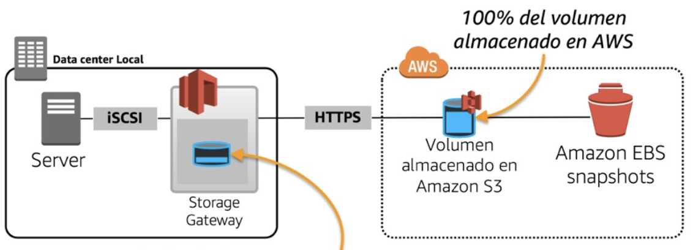

Servidores y Almacenamiento en la Nube

Propietario del Servicio: Amazon Web Services (AWS)
Contactos y Procedimientos para Inscribirse en el Servicio:
- Detalles de Contacto: soporte@aws.com, +1-888-123-4567
- Procedimiento de Inscripción: Registrarse en el sitio web de AWS, seleccionar los servicios deseados y seguir las instrucciones para configurar y empezar a utilizar los servidores y almacenamiento en la nube.
Descripción y Resultado Deseado por el Cliente:
Justificación del Negocio: Utilizar infraestructura de servidores y almacenamiento en la nube para manejar la base de datos de clientes, promociones, menú, inventarios y otros datos relevantes, mejorando la eficiencia y seguridad.
Resultado Deseado en Cuanto a Utilidad: Proveer un almacenamiento seguro y escalable para datos críticos del negocio, con acceso rápido y eficiente.
Resultado Deseado en Cuanto a Garantías: Asegurar la disponibilidad continua del servicio, con respaldo y recuperación de datos garantizados.
Ofertas y Paquetes:
- Paquete Básico: Almacenamiento y servidores básicos con capacidad limitada y funciones esenciales.
- Paquete Medio: Mayor capacidad de almacenamiento y funcionalidades avanzadas de gestión de datos.
- Paquete Premium: Máxima capacidad y todas las funcionalidades avanzadas, incluyendo soporte técnico prioritario y servicios de backup y recuperación.
Costos y Precios:
Esquema de Precios: Los precios varían según el paquete y las necesidades del negocio. Consultar con el proveedor para obtener una cotización personalizada.
Glosario:
- Propietario del Servicio: Empresa responsable de la administración y funcionamiento del servicio.
- Clientes: Empresas e individuos que utilizan el servicio de servidores y almacenamiento en la nube.
- Justificación del Negocio: Razón para utilizar almacenamiento y servidores en la nube.
- Paquete Básico: Almacenamiento y servidores esenciales.
- Paquete Medio: Mayor capacidad y funciones avanzadas.
- Paquete Premium: Servicio completo con soporte prioritario y funciones avanzadas.
- Esquema de Precios: Costos según el paquete y necesidades del cliente.